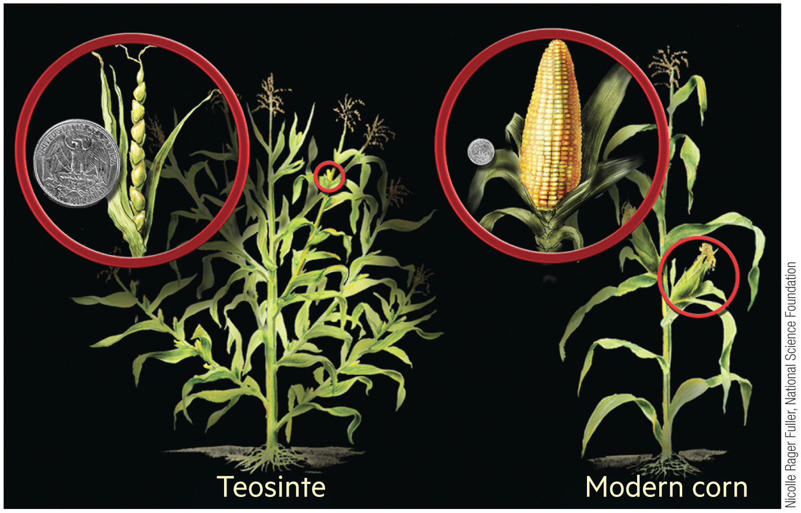

Chapter 12
Food
How Do We Feed Ourselves?
Introduction
Is food a sustainability/environmental issue?


12.1 · How Did Our Modern Agriculture Develop?
From Hunter-Gatherers to Agriculture
- Until ~10,000 years ago, humans were nomadic hunter-gatherers.
- Advantages: Varied diet. Fewer “work” hours.
- Disadvantages: Violence. Predation.
- Agriculture enabled larger populations on less land. Crops (wheat, corn) and animals (cattle, chickens, pigs) were domesticated.
- ~6,000 years ago: Egyptian and Mesopotamian irrigation; Chinese organic fertilization with plant and animal waste.
- The Roman Empire rotated crops and used fallow fields to restore soil. Native Americans enriched soil with fish and used companion planting.



12.1 · The Green Revolution
Tripling Yields in 40 Years
- Gas- and diesel-powered equipment replaced human and animal power, reducing labor but increasing fossil fuel dependence.
- Large-scale irrigation, synthetic pesticides, and synthetic fertilizers were adopted globally after 1960.
- Average grain yields tripled to 6 metric tons per hectare within just 40 years.
- Genetic engineering (1970s) created GMOs, now 88% of US corn and 94% of soybeans are genetically modified.

12.1 · Transportation
Rail and Refrigeration changed “what” we eat.
- Changed the dynamic of seasonality.

12.2 · How Does Modern Agriculture Impact the Environment?
Loss of Agrodiversity
- The Green Revolution selected certain crop varieties for production over others and reduced agrobiodiversity.
- Loss of crop varieties leads to genetic erosion.
- The resultant crop or livestock monoculture temporarily have higher yields but are more vulnerable to pests and diseases.

12.5 · How Have Our Food Systems Changed?
How Have Our Food Systems Changed?
A food system is the complex web of processes that connect agricultural production to food consumption.
3
Crops (rice, maize, wheat) provide 60% of human plant calories
90%
Decline in cultivated crop variety over the past 100 years
10
US states produce more than half of the country's food supply

12.6 · Reducing Food Waste and Restoring the Soil
Food Waste
- 1/3 of global food output is lost as food waste annually. In the US, 60%+ of waste occurs because consumers buy food they don't eat ,costing ~$165 billion per year.